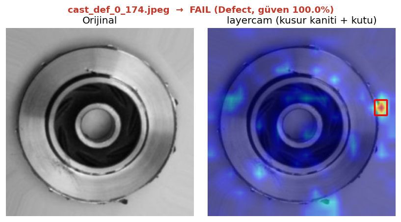

Endüstriyel görüntü işleme ve derin öğrenme üzerine çalışan bir Computer Vision Engineer.
Üretim kalite kontrolünden 3B rekonstrüksiyona kadar uçtan uca vision sistemleri kuruyorum — algoritma
tasarımı, model eğitimi ve canlıya alma dahil. Geliştirme akışımı yapay zeka destekli araçlarla
(Claude Code, Cursor) yürütüyorum; aşağıdaki canlı demoyu bu akışla baştan sona tek başıma
geliştirip yayına aldım. Aremak'ın donanım + optik + yazılımı tek elde birleştiren vision yaklaşımına
teknik derinlik ve hızlı üretim disipliniyle katkı sağlamak istiyorum.
🟢 CANLI DEMO — Aremak için hazırlandı
Döküm parça yüzey kusuru tespiti · tarayıcıda görüntü yükleyip dene
Döküm pompa çarklarında otomatik yüzey kusuru tespiti: görüntü yüklenir →
PASS/FAIL + güven skoru + kusur ısı haritası. MobileNetV2 transfer learning ile
%99+ doğruluk; kutu/maske etiketi olmadan LayerCAM ile zayıf-denetimli
lokalizasyon (orta seviye katman + yüksek çözünürlüklü ısı haritası + otomatik bounding-box).
FastAPI + Docker ile canlıya alındı. Ayrıca aydınlatma duyarlılığı
demosu, endüstriyel aydınlatmanın tespit başarısına etkisini somutlaştırır.

LayerCAM ısı haritası + bounding-box ile kusur lokalizasyonu
Sıfırdan kurduğum global dil öğrenme ürünü: Netflix & YouTube için iki tarayıcı eklentisi
+ merkezi web platformu, 50+ dil, ~250 kullanıcı. İçerik izlerken bağlama duyarlı
LLM destekli çeviri/sohbet (OpenRouter), maliyeti düşürmek için Redis cache'li gerçek
zamanlı çeviri hattı. PostgreSQL + spaced-repetition modülü; Docker ile VPS'e deploy (SSH, domain, SSL).
Teknik geliştirmenin yanı sıra go-to-market süreçlerini tek başıma yürüttüm
(SEO, Reddit/Google Ads, reklam materyali). Ürünün tamamı AI-destekli geliştirme akışıyla
(Claude Code/Cursor) hayata geçti. Ürün hâlâ canlı (free tier).